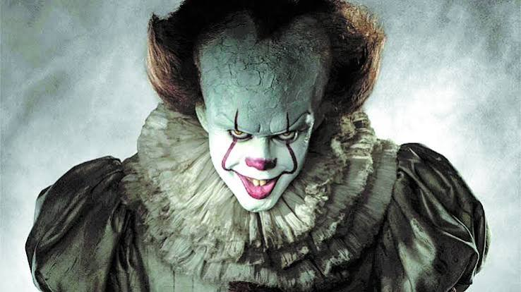

IT: A Coisa é uma história de terror baseada no livro de Stephen King. A história acontece na cidade de Derry, onde crianças começam a desaparecer misteriosamente.
Pennywise é um palhaço assustador que aparece a cada 27 anos para atacar crianças. Ele usa o medo das pessoas para ficar mais forte.
Bill, Beverly, Richie, Eddie, Ben, Mike e Stanley são amigos que se unem para enfrentar Pennywise.
IT: A Coisa foi lançado em 2017 e IT: Capítulo Dois foi lançado em 2019.